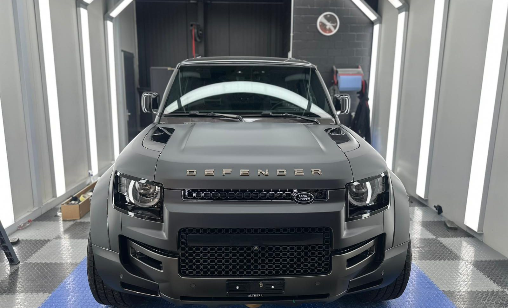

Erst die Kante. Dann der Lack.
Carrosserie, Lackiererei und Felgen in Altstätten. Ihr Auto hat einen Schaden? Für die Meldung genügen Name und Telefon.
- Alte Landstrasse 63, 9450 Altstätten
- Montag bis Freitag geöffnet
- 4,8 von 5 bei 37 Google-Bewertungen

Offen von Montag bis Freitag
Montag bis Freitag geöffnet, mittags von 12.00 Uhr bis 13.15 Uhr zu.
| Montag bis Donnerstag | 7.30 Uhr bis 12.00 Uhr und 13.15 Uhr bis 17.30 Uhr |
|---|---|
| Freitag | 7.30 Uhr bis 12.00 Uhr und 13.15 Uhr bis 17.15 Uhr |
| Samstag und Sonntag | geschlossen |
An Feiertagen und in Betriebsferien gelten andere Zeiten.
Alte Landstrasse 63
9450 Altstätten
Route zur Alten Landstrasse 63 öffnen
Telefon 071 755 88 61
Mobil 076 615 44 41
E-Mail info@autospeedy.ch
Carrosserie, Lack, Felgen und Occasionen an einer Adresse
Tesla beschädigt? Hier sind Sie richtig.
Auto Speedy ist Tesla Approved Body Shop. Kommt Ihr Fall von Tesla, wählen Sie das in der Meldung aus. Das Modell wählen Sie mit einem Tipp.
4,8 von 5 auf Google bei 37 Bewertungen
37 Bewertungen auf Google Maps
Stand 1. November 2026. Der Betrieb hat noch keine Bewertung beantwortet.
Die Autowerkstatt überzeugt durch schnelle, zuverlässige Arbeit und faire Preise. Das Team ist freundlich, erklärt Reparaturen verständlich und arbeitet sehr professionell. Termine werden eingehalten und man fühlt sich gut beraten. Sehr empfehlenswerter Service.
Google-Bewertung, Januar 2026
Einwilligung der Verfasserin oder des Verfassers offenIch möchte mich bei der Garage Speedy in Altstätten herzlich bedanken. Mein Fahrzeug wurde nach einem Karosserieschaden absolut einwandfrei repariert. Die gesamte Abwicklung mit der Versicherung verlief reibungslos, und ich schätze die hervorragende Arbeit sowie den freundlichen Umgang des gesamten Teams sehr.
Google-Bewertung, Mai 2025
Einwilligung der Verfasserin oder des Verfassers offenTop Fach Werkstatt, nur Profis am Werk. Vorbildlicher Service
Google-Bewertung, Dezember 2023
Einwilligung der Verfasserin oder des Verfassers offen
Schaden melden in zwei Angaben
Name und Telefon genügen. Ihr E-Mail-Programm öffnet die Meldung vorbereitet. Sie senden sie dort ab.